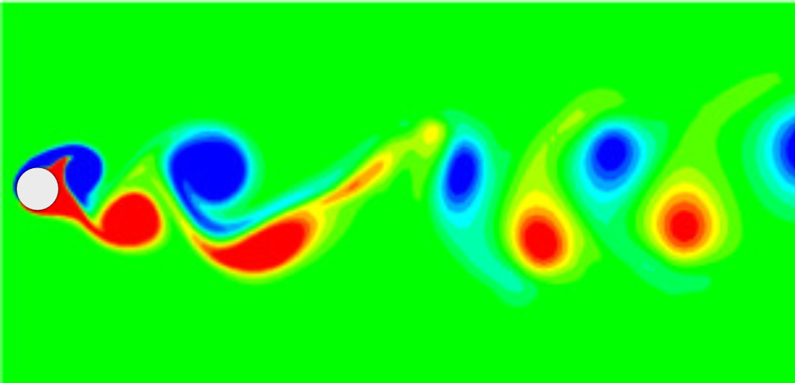

Suppression of Vortex-Induced Vibrations (VIV)
Summary — This project focuses on reducing VIV of circular cylinders using passive control methods. I worked on both the experimental setup (low-speed wind tunnel) and numerical simulations using OpenFOAM, comparing different control geometries and their effect on lift, drag, and vibration amplitude.
Approach
On the experimental side, I helped build and validate a low-speed wind tunnel and carried out tests on cylinders and airfoils, achieving around 96% agreement with reference data. On the numerical side, I implemented a 2D VIV solver in OpenFOAM and tested various passive devices such as splitter plates and control cylinders.
Key observations
Some passive devices significantly reduced vibration amplitude but at the cost of higher drag, while others provided a more balanced trade-off. The work highlighted how sensitive VIV is to wake structure and how geometric changes can redirect or damp the unsteady loads on the cylinder.
What I learned
The project gave me experience in building a facility from scratch, validating it, and connecting experimental observations with simulation results. It also reinforced how important it is to understand wake physics when designing practical suppression strategies.
Back to Projects